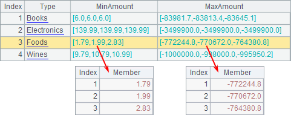
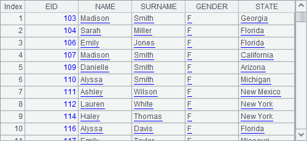

7.1.2 Database cursor
db.cursor(sql) function can convert data returned from the database into the cursor:
|
|
A |
|
1 |
=demo.cursor("select * from EMPLOYEE") |
|
2 |
=A1.fetch(100) |
|
3 |
=A1.fetch(100) |
|
4 |
>A1.close() |
A1 creates a database cursor. A2 fetches the first 100 records from it, as shown below:

The cs.fetch() funciton returns data fetched from the cursor as a table sequence.
A3 continues to fetch another 100 records from the result set in order as esProc allows a single traversal of data in a forward-only fashion:

As can be seen from the employee IDs, A3 fetches records from the 101th employee. This is merely an example of fetching data from cursor with the cs.fetch() function. For more about esProc cursor, refer to Basic Uses of Cursor.
If data in a cursor hasn¡¯t been all fetched out when data fetching is over, use cs.close() to close the cursor. It is very important to close the cursor, particularly the database cursor, timely. Because a database cursor gets data from the database, its existence means the connection to the database remains, causing unnecessary memory usage and even the overrun of cursors allowed to be created by the database.
Similar to the db.query() function for data query, database cursor creation allows using parameters, too. For example:
|
|
A |
|
1 |
=demo.cursor("select EID, NAME, SURNAME, GENDER, STATE from EMPLOYEE where GENDER=? and EID>?","F",100) |
|
2 |
=A1.fetch() |
In a SQL statement, parameters are represented by question marks (?) whose values are entered in order after the statement and separated by comma. A1¡¯s cursor returns female employees whose EID is greater than 100. A2 returns all records in A1¡¯s cursor:

The cs.fetch() function in A2 doesn¡¯t specify the number of records to be returned, and thus returns all records in the cursor. When data in a cursor has all been fetched out, the cursor will close automatically with no need of calling cs.close().